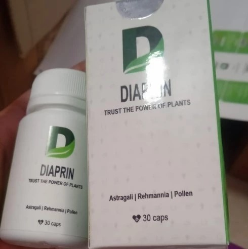
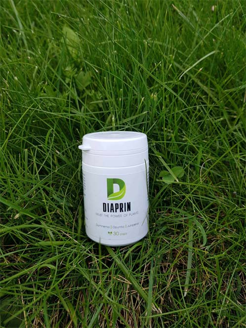

Orang dengan diabetes berisiko lebih tinggi tertular infeksi virus
Menurut statistik, penderita diabetes meninggal dunia akibat virus dan penyakit menular 2-3 kali lebih sering daripada orang lain
Spesialis menceritakan cara penderita diabetes dapat melindungi tubuh mereka dan meningkatkan sistem kekebalan mereka

Wawancara disiapkan oleh koresponden khusus Mochtar Awaluddin
Dari semua penyakit kronis - diabetes mellitus dianggap paling berbahaya. Menurut statistik, sekitar 1,5 juta orang meninggal dunia akibat diabetes di dunia setiap tahun. Akan tetapi, bahkan lebih banyak - 2,2 juta - meninggal karena fakta bahwa tubuh yang dilemahkan oleh diabetes tidak dapat mengatasi penyakit lain, termasuk infeksi virus. Virus umum yang dapat ditangani dengan mudah oleh tubuh orang sehat dapat menjadi hukuman mati bagi penderita diabetes. penyakit bertumpukan dan bagaimana penderita diabetes dapat melindungi diri dari infeksi? Hal ini diungkapkan oleh seorang spesialis dan praktisi penelitian endokrinologi Leah Utami.
Dalam kondisi penyakit kronis, bahkan infeksi biasa bisa menjadi sangat berbahaya. Di antara orang yang sangat perlu menjaga kesehatannya - penderita diabetes. Kadar glukosa yang tinggi menurunkan daya tahan tubuh, sehingga harus dikendalikan dengan baik untuk mencegah penurunan kesehatan. Orang dengan diabetes mellitus menjadi lebih sering terinfeksi infeksi virus daripada orang lain, dan karena adanya patologi kronis, mereka lebih berisiko mengembangkan bentuk dan komplikasi yang parah daripada orang lain.
Mengapa khususnya penderita diabetes dalam kalangan berisiko tinggi?
Infeksi virus dapat memiliki konsekuensi yang tidak terduga. Jika tubuh yang sehat masih mampu mengatasi penyakit atau konsekuensinya sendiri, maka penderita diabetes mellitus dengan infeksi virus, serta penyakit kronis berat lainnya, cenderung memiliki risiko komplikasi serius hingga kematian.
Silahkan beri tahu kami mengapa virus berbahaya bagi penderita diabetes?
Kadar gula darah tinggi pada diabetes menyebabkan disfungsi respon imun. Idealnya, segera setelah virus memasuki tubuh, sel-sel sistem kekebalan manusia mengenalinya sebagai ancaman bagi tubuh, dan respons kekebalan dipicu: sel-sel pelindung menyerang virus dan mencegah penyebaran dan perkembangan biaknya. Namun, mekanisme penderita diabetes ini terganggu: sel-sel sistem kekebalan tidak merespons virus yang berbahaya, tubuh tidak melawan infeksi.Oleh karena itu, dengan kadar gula yang tinggi, infeksi apa pun dapat berkembang dengan sangat cepat.
Sayangnya, statistik kematian penderita diabetes menunjukkan angka yang mengerikan:
- lebih dari 10% kematian akibat infeksi virus terjadi pada orang dengan patologi kardiovaskular;
- sekitar 7-8% pada penderita diabetes tipe 2.;
- 2-5% kematian dicatat pada orang dengan patologi parah lain pada organ dan sistem internal.
Bagaimana virus mempengaruhi tubuh penderita diabetes yang lemah?
Setiap infeksi virus adalah stres bagi tubuh manusia dengan diabetes. Untuk melawan agen penyebab infeksi, tubuh memproduksi hormon stres, kortisol, dan adrenalin dalam jumlah yang meningkat. Hormon-hormon ini mengganggu fungsi insulin dan mengaktifkan produksi glukosa oleh hati. Dalam kondisi seperti itu, lebih sulit bagi penderita diabetes untuk menjaga kadar glukosa dalam kisaran normal.
Jika situasi ini berlangsung cukup lama, maka seseorang dengan diabetes tipe 1 dapat mengalami ketoasidosis dan bahkan koma ketoasidosis. Koma diabetik hiperosmolar dapat berkembang pada penderita diabetes tipe 2, terutama pada penderita usia lanjut dan usia tua. Kedua komplikasi diabetes akut ini sangat berbahaya!
Silahkan beri tahu kami apa yang perlu dilakukan oleh penderita diabetes untuk melindungi diri dari infeksi virus?
Kadar glukosa darah dapat berubah secara drastis selama penyakit berkembang. Oleh karena itu, Anda harus sering memantau kadar gula darah secara rutin untuk mengambil tindakan tepat waktunya ketika kadar gula naik atau turun.
Selain itu, penting untuk memperkirakan kemungkinan adanya risiko dan mengikuti rekomendasi:
- membuat pasokan insulin untuk terapi pengganti;
- orang yang menjalani terapi dengan insulin mungkin memerlukan peningkatan dosis dan suntikan tambahan untuk mempertahankan kadar gula darah normal;
- makan lebih sering dan dalam porsi kecil, hindari konsumsi karbohidrat yang mudah dicerna, kecuali dalam kasus hipoglikemia;
- minum lebih banyak cairan untuk mencegah dehidrasi, jangan mengkonsumsi minuman yang manis;
Bagaimana penderita diabetes bisa tidak terkena infeksi virus? Selain tindakan pencegahan yang sudah semua tahu, apa yang perlu diketahui jika ada aturan khusus untuk mereka?
Faktanya, aturannya biasa saja - harus mengikuti semua tindakan pencegahan yang paling umum. Cara terbaik untuk mengatasi masalah adalah dengan mengetahui aturan-aturan ini dan bersiap untuk menghadapi masalah terlebih dahulu.
Untuk membantu tubuh menormalkan kadar gula darah, memperkuat sistem kekebalan dan mencegah komplikasi, saya sarankan menggunakan produk yang membantu penderita diabetes memperbaiki indeks glikemik tepat waktunya.
Saya ingin tahu produk apa yang Anda bicarakan. Bisakah Anda memberi tahu kami lebih banyak informasi tentang produk semacam itu?
Ini tentang produk yang disebut Diaprin. Produk ini mempengaruhi faktor peningkatan atau fluktuasi gula darah secara langsung. Bahan-bahan berkualitas tinggi memberikan efek yang kuat dan saya merekomendasikan Diaprin untuk penggunaan reguler bagi orang yang menderita diabetes mellitus, terlepas dari tipenya, tingkat keparahannya, dan apakah ada penyakit kronis yang menyertainya atau tidak.
Saya ingin langsung menarik perhatian Anda bahwa produk tersebut tidak mengandung alkohol, sel jaringan babi, serangga, atau hewan liar lain. Perlu dicatat bahwa bakteri yang dinyatakan dalam komposisi produk ini termasuk dalam kategori mikroorganisme dan tidak dilarang.
Bahan aktif utama dalam produk ini membantu menormalkan kadar gula darah dan mengontrol kadar glukosa. Komposisi produk membantu meningkatkan produksi hormon insulin alami oleh tubuh yang mengarah pada normalisasi kadar gula darah.
Saya akan menceritakan secara singkat tentang fungsi apa yang dilakukan oleh Diaprin:
- Memberikan efek penguatan, hipoglikemik, hepatoprotektif.
- Membantu meningkatkan kerentanan reseptor terhadap insulin.
- Mempromosikan peluncuran mekanisme untuk menormalkan kadar gula darah, menyesuaikan metabolisme karbohidrat.
- Membantu melindungi insulin dari kerusakan oleh peptidase, meningkatkan penyerapan dan pengangkutan glukosa dalam sel.
Saya sebagai orang yang tidak menderita diabetes sendiri, saya tidak mengerti dengan baik apa yang Anda bicarakan. Silahkan jelaskan kepada saya bagaimana produk ini bekerja secara spesifik?
Dengan kata-kata sederhana, Diaprin membantu mengembalikan keseimbangan zat dalam tubuh dan
menghilangkan manifestasi negatif diabetes:
1) membantu meningkatkan fungsi pankreas;
2) membantu menurunkan kadar glukosa darah secara alami;
3) membantu meningkatkan khasiat perlindungan umum tubuh, menjadi imunomodulator yang kuat;
4) membantu memulai mekanisme normalisasi kadar gula darah dan membantu memperbaiki metabolisme
karbohidrat;
5) membantu menormalkan metabolisme, menurunkan tekanan darah dan kadar kolesterol darah.
Terima kasih atas penjelasan yang begitu rinci! Silahkan cerita bagaimana penderita diabetes bisa mendapatkan produk ini?
Siapapun bisa mendapatkan produk ini, tidak hanya penderita diabetes, tetapi juga kerabat mereka, teman-temannya orang yang menderita penyakit ini, untuk membantunya. Itu sangat mudah: Anda hanya perlu pergi ke situs web khusus untuk penjualan produk Diaprin dan membuat pesanan. Setelah itu, konsultan akan menghubungi Anda dan menjelaskan semua rincian penerimaan produk, memilih paket individu untuk Anda dan memberitahu Anda tentang khasiat dan durasi penggunaan produk secara rinci.
Informasi penting dari editor portal:
Setelah wawancara, staf editorial portal menghubungi perwakilan distributor produk Diaprin yang memungkinkan kami untuk menerbitkan formulir pemesanan daring untuk pembaca kami. Produk ini tersedia dengan harga diskon khusus yang dengan baik hati disediakan oleh produsen khusus untuk penderita diabetes,
FORMULIR PEMESANAN STANDAR
* hanya untuk penggunaan internal
* baca aturan sebelum pakai
Komentar pengguna:
Juliana Hutabarat
Terima kasih untuk artikel Anda. Saya pernah coba beli Diaprin di tempat lain. Malah ditawarin harga 10 kali lebih tinggi. Saya menolak. Dan kemudian teman saya mengirimi saya tautan artikel ini. Jadi saya pesan di situs ini. Dikirim sangat cepat. Saya mulai menggunakan produk segera setelah terima dan saya sudah mendapatkan hasilnya!
Rizka Sitorus
Trims, udah dipesan. Konsultan nelpon dan aku nanya berapa paket produk dengan diskon masih ada. Katanya ada cuma beberapa yang tersisa dan produknya dengan cepat terjual habis - mungkin, orang akan belajar lebih banyak tentang produk ini. Nampaknya bagi aku bahwa produknya mungkin akan segera habis.
Rifka Jeslin
Untuk waktu yang lama saya tidak dapat menemukan produk baik yang akan mengurangi gula darah dan memungkinkan saya untuk menjalani kehidupan normal. Saya menderita diabetes sejak masa kecil, saya harus beradaptasi dan mengambil berbagai cara setiap saat untuk merasa normal. Ibu saya juga menderita diabetes, tetapi dulunya tidak ada produk yang efektif semacam ini. Sekarang kita minum Diaprin bersama.
Prabowo Sianipar
Saya tidak berani mengatakan bahwa diabetes dapat dikalahkan sepenuhnya, tetapi sangat mungkin untuk dilupakan dan gejalanya juga. Makasih atas saran Anda, saya tak coba juga
Prabowo Sianipar
Saya pernah mencoba Diaprin. Saya harap penggunaannya akan berikan hasil yang positif. Masih terlalu dini untuk bicarakan kemajuan. Tapi saya merasa lebih baik, kadar gula darah saya stabil, dan saya tidak merasa mau pingsan sama sekali.
Nurhayani Gizella
Tidak peduli apa saya ikuti diet, jadwal atau gak atau tidak pantau kadar gula, saya tetap kehilangan berat badan terus. Saya sudah capai titik kritis. Saya coba Diaprin. Sepertinya telah bantu, ternyata menghentikan penurunan berat badan, akhirnya saya tidak lagi menurunkan berat badan.
Chores Sirait
Artikel yang menarik dan sangat informatif. Orang yang derita diabetes perlu menjaga kesehatannya.
Asmina Sitorus
Apakah produk ini benar-benar bisa bantu?
Lilis Putrii
Pil yang saya resepkan tidak bekerja sebaik yang saya inginkan. Saat saya nemu produk ini, saya tanya kepada spesialis tentang khasiatnya. Dia bilang saya dapat belinya, tetapi tidak perlu sangat berharap produk ini akan bantu saya. Saya beli, tidak ada keajaiban (diabetes tidak dapat disembuhkan), tetapi saya mulai merasa lebih baik setelah pakai ini. Gula sekarang normal dan bahkan spesialis sedikit terkejut dengan efeknya.
